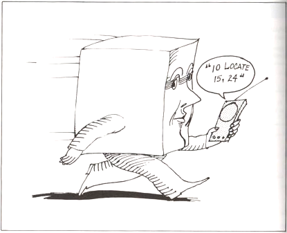
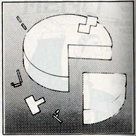

Mattel Aquarius Extended Microsoft Basic Cartridge Instructions
[Typed and converted to HTML by iGame3D & Retro-Zone Dean 2009.04.11 (Completion Date)]
Dear Aquarius Owner,
It's been a while since you experienced the thrill of running your first successful program on the Aquarius Home Computer. And now you're enjoying the
satisfaction - the independence - that comes from being proficient at programming in BASIC.
Are you ready for more? More programming possibilities, more flexibility, more fun? That's what Extended BASIC gives you.
You can still use all the features of Regular BASIC, plus the extra features offered by Extended BASIC.
With extended BASIC, you'll be able to edit programs more efficiently and create beautiful graphics. You can add charts and graphs
and lively animation to your repertoire of programming abilities. Extended BASIC can spice up your programs so much that you may discover a new fascination with programming.
Keep an eye out for special "road signs" in this book. They point to tips and facts that will make your computer experience smoother and more enjoyable.
|
|
KEY IDEAS |
|
TRY THIS |
|
|
BY THE WAY |
|
REMINDER |
|
|
GOOD HABITS |
|
COMPUTER TALK |
|
|
CONTROL SHORTCUTS |
Finally, wherever your computer takes you, have a great time!
Model No.
Serial No.
Notice - Projection TV Owners
Some stationary game patterns produced by this product may be permanently imprinted on Projection TV tubes by extended use at high brightness levels.
Consult Project TV Owner's manual before use of this product.
TABLE OF CONTENTS
INTRODUCTION
What is Extended BASIC?
What You Should Already Know
What This Guide Tells You
The Extensions of Extended BASIC
How to Load and Unload Extended BASIC
A Reminder About Cold Starts, Warm Starts, and Crashes
Another Reminder - Immediate and Programmed Mode
A Word About Subcommands
Quick Reference Tables
Clearing the Screen With CLS
CHAPTER 1 -
MAKE A MISTAKE? ME? -
The EDIT Statement
How EDIT Works - Insert mode
The EDIT Subcommands
Quick Reference Table
CHAPTER 2 -
AQUARIUS AS ARTIST
The X-Y Axis and Color
The X-Y Axis
Adding Color
CHAPTER 3 - D
DRAWING DOT TO DOT - The LINE Statement
The Simplest LINE Statement
Lines in Living Color
Boxes Made of Lines
Using STEP with the LINE Statement
Using Numeric Expression With the LINE Statement
Quick Reference Table
CHAPTER 4 -
'ROUND AND ROUND WE GO' - The CIRCLE Statement
Drawing Circles
Using Numeric Expressions With the CIRCLE Statement
Drawing Arcs and Pie Slices
Drawing Ellipses
Omitting Options in the CIRCLE Statement
Quick Reference Table
CHAPTER 5 -
LET'S DRAW SOME MORE - The DRAW Statement
The Basic Subcommands
The M, B and N Subcommands
The A, C and S Subcommands
Quick Reference Table
CHAPTER 6 -
EVEN MOVING THE CURSOR CAN BE FUN - The LOCATE Statement
CHAPTER 7 -
FASTER ANIMATION - The GET and PUT Statements
GET
PUT
Quick Reference Table
CHAPTER 8 -
WHAT'S ON THE MENU? = The MENU Statement
How to Write MENU Statements
Quick Reference Table
CHAPTER 9 -
DEFINING YOUR OWN FUNCTIONS - The DEF Statement
How to Use DEF
Quick Reference Table
APPENDIX A
Error Messages
Memory Maps
Graphics Characters
Reserved Words
APPENDIX B
Practice Programs
ATN
INTRODUCTION
WHAT IS EXTENDED BASIC?
"Regular" BASIC is the version of BASIC language that came with your Aquarius computer when you bought it. "Extended" BASIC
allows you to continue using Regular BASIC, as well as a number of "extensions" or features that Regular BASIC does not include.
Unlike Regular BASIC, Extended BASIC is not built into your Aquarius computer, you use it by plugging in a separate cartridge.
WHAT YOU SHOULD ALREADY KNOW
Extended BASIC is easy to learn, as easy as Regular BASIC. However, to take full advantage of Extended BASIC, you should be
thoroughly familiar with Regular BASIC as it is explained in the Aquarius Guide To Home Computing. In fact, if you haven't
used some of the Regular BASIC statements for a while, especially POKE, PSET, and PRESET, it would be a good idea to review
the Guide to Home Computer before reading this guide.
WHAT THIS GUIDE TELLS YOU
The Aquarius Guide to Extended BASIC tells you how to use the extensions, the features that are not part of Regular BASIC.
It does not re-explain the statements and operation of Regular BASIC.
Throughout this guide you will see references to the Guide to Home Computing, as well as occasional reminders concerning certain
concepts and procedures you may have forgotten, For the most part though, the Guide to Extended BASIC assumes you understand all
the statements and operations of Regular BASIC.
THE EXTENSIONS OF EXTENDED BASIC
The extra programming features offered by Extended BASIC are listed below, along with brief explanations of each.
|
PROGRAM |
EXPLANATION |
|
CLS |
Clears the screen |
|
EDIT |
Helps you change or correct program lines quickly and efficiently |
|
LINE |
Helps you draw lines and boxes |
|
CIRCLE |
Helps you draw circles, ellipses, and pie shapes |
|
DRAW |
Gives you added flexibility in drawing lines and shapes |
|
LOCATE |
Allows you to place the cursor on the screen between columns 1 and 38 |
|
GET and PUT |
Helps you achieve fast animation by recalling images stored in arrays |
|
MENU |
Helps you construct menus or lists of operations for a user to choose from |
|
DEF |
Defines numeric functions that can be used in a program the same as a built-in BASIC function |
|
ATN |
Gives you the arc tangent of an angle to help you determine at what angle to move characters across the screen |
HOW TO LOAD AND UNLOAD EXTENDED BASIC
As we mentioned earlier, Extended BASIC is stored on a cartridge that plugs into your Aquarius Computer.
TO LOAD YOUR EXTENDED BASIC CARTRIDGE:
1. Make sure your Aquarius computer and TV set are plugged into a 110-volt ac outlet.
2. Make sure the computer and TV set are both turned on.
3. If you're not using a memory cartridge, insert the Extended BASIC cartridge into the cartridge port of the Aquarius computer,
or in the front port of your Mini-Expander Module.
If you plan to use a memory cartridge.
A. Insert the memory cartridge into the rear port of the Mini-Expander Module.
B. Insert the Extended BASIC cartridge into the front port of the Mini-Expander Module.
C. Insert the Mini-Expander into the cartridge port of the Aquarius computer.
4. Connect the Aquarius computer to the TV set.
5. Set the Aquarius to channel 3 or 4, whichever is weaker in your area. Then tune your TV set to the same channel.
6. Turn on your Aquarius computer, then turn on the TV
7. If you plan to use a cassette recorder or printer, you may plug it in while the Aquarius is running.
8. Press RST and RTN. The words "Extended BASIC" and the Microsoft copyright statement appear at the top of the screen.
9. The "OK" prompt tells you that Extended BASIC is read for you to use.
TO REMOVE YOUR EXTENDED BASIC CARTRIDGE:
1. Turn off the TV.
2. Turn off the Aquarius computer
3. If you're not using a Mini-Expander Module, remove the Extended BASIC cartridge from the cartridge port.
If you are using a Mini-Expander Module, remove the Extended BASIC cartridge from the program port or simply remove the
Mini-Expander Module from the Aquarius cartridge port.
4. if you don't plan to use the Aquarius computer for a while, unplug the computer and the peripherals from the 110-volt ac outlet.
A REMINDER ABOUT COLD STARTS, WARM STARTS, AND CRASHES
Remember that the Aquarius computer can be restarted in two different ways. Pressing [RST] and [RTN] initiates a "cold start" you
erase whatever program data is in the computer's memory.
Pressing [RST] followed by [CTL]-[C] causes a "warm start", data in memory is not erased, unless the system has crashed.
Remember that a crash is when Aquarius stops working, as though it has had a nervous breakdown. Electrical problems can cause a
crash, or, Aquarius may simply not know how to respond to certain sequences of keyboard commands. A warm start or cold start will
usually get Aquarius going again.
ANOTHER REMINDER - IMMEDIATE AND PROGRAMMED MODE
Regular BASIC allows you to execute statements from either Immediate mode or Programmed mode. In Immediate mode the
operation is carried out as soon as you press RTN. In Programmed mode you assing line numbers to the statements and
execute them by typing RUN. Immediate mode and Programmed mode operate the same way in Extended BASIC as they do
in Regular BASIC. The only extensions that may not be used in Immediate mode are DEF, MENU, and EDIT.
A WORD ABOUT SUBCOMMANDS
Many statements in Extended BASIC have what we call subcommands. Depending on which subcommand you specify when using
a particular statement, you can achieve varying results. For example, to draw a line anywhere on the screen, you can use the LINE
statement. But, if you add the B subcommand to your LINE statement. Aquarius draw a box, and if you add BF, Aquarius draws
a box and fills it with a color you specify.
QUICK REFERENCE TABLES
At the end of each chapter that discusses a statement which uses subcommands, you'll find a quick reference table. This table:
1. Gives you the format of the statement.
2. Tells you where numeric expressions are allowed.
3. Identifies the screen that the statement uses (Text mode or Graphics mode; these are explained in Chapter 2).
4. Indicates which parts of the statement are optional, and
5. Lists and explains the subcommands for that statement
Parts of the statement that are enclosed in brackets ([]) in the quick-reference tables are optional. For an example, look at the LINE
statement quick-reference table at the end of Chapter 3. Everything enclosed in brackets is an option (x2,y2) is the only required part of the
statement.
CLEARING THE SCREEN WITH CLS
The CLS statement of Extended BASIC clears the screen the same way that PRINT CHR$(11) does in Regular BASIC. You can still use
PRINT CHR$(11) in Extended BASIC, but it's faster to type CLS.
CLS can be used in Immediate mode or Programmed mode. Besides just clearing the screen, CLS erases colors, re-introducing the
default values, black characters on a light blue background.
CHAPTER 1 - MAKE A MISTAKE? ME? -
THE EDIT STATEMENT
The EDIT statement allows you to quickly change program lines without having to retype everything. Since the EDIT statement is not
essential to the use of the Extended BASIC's graphics features, you can skip this chapter for now if you wish. However, if you are
interested in easy ways of making corrections and changes, read on.
Imagine typing this long PRINT statement:
10 PRINT Please Don't Forget To Include Quotation Marks"
Maybe you noticed right away that we left off the first set of quotation marks, a common frustrating error. We'll just have to retype the entire
line, right? Wrong. Extended BASIC's EDIT statement allows you to add, change, and delete characters in any program line without retyping
the entire line.
HOW EDIT WORKS - INSERT MODE
Suppose you type.
10 PRINT Please Don't Forget"
You need to insert the quotation marks before the word Please. Type
EDIT 10 [RTN]
This puts you in EDIT mode and tells Aquarius you want to edit line 10. in response the cursor moves to the beginning of line 10. Start
pressing the SPACE key. As you do, you'll notice that the characters on line 10 appear one by one at the cursor passes by. Stop when the
cursor is to the immediate right of PRINT. This is what the display looks like now:
10 PRINT
Press the [I] key. Nothing new appears on the screen, but you are now in Insert mode, which allows you to insert characters without retyping
the line. Now enter the quotation marks. The quotation marks appear, and the cursor moves to the next character.
10 PRINT "
Pressing the [RTN] key at this point "saves" or makes permanent the changes to line 10, lists the remainder of the line, takes you out of Insert
mode and EDIT mode, and moves the cursor to the first column below the edited line. Aquarius is now ready for another Extended BASIC command
or statement.
You can use EDIT to change the program lines in any order you wish. In other words, if you've already entered lines 10 through 50 of a program,
you can still edit line 40 by typing EDIT 40. After making the changes to line 40, you would simply resume entering program lines. The screen
might look something like this:
10 INPUT "Hi, What's your name";NA$
20 PRINT "how old are you. ";NA$
30 INPUT age
40 DAYS = agr*365
50 PRINT "That's at least";DAYS;"days"
EDIT 40
40 DAYS = age*365
50 PRINT "Goodbye, ";NAS;
THE EDIT SUBCOMMANDS
The "I" for Insert mode is only one subcommand of EDIT. Here are some more.
X - ADVANCING THE CURSOR
Using X in EDIT mode advances the cursor to the end of the specified line and allows you to extend the line in the Insert mode.
The maximum length when using X is 75 characters.
Example: Line 10 looks like this
10 INPUT "How Old Are you"
You want to add a semicolon and an N to the end of the line. Enter Edit mode by typing:
EDIT 10 [RTN]
Now type X. This causes all of the line 10 to appear, with the cursor positioned at the end of the line:
10 INPUT "How Old Are You"
You're already in Insert mode, so type a semicolon followed by N.
10 INPUT "How Old Are You";N
Press [RTN]. The Change is saved and the cursor moves to the beginning of the line below line 10.
You're now out of EDIT mode.
L - LISTING THE LINE
Use the L in EDIT mode to list the remainder of the line you're editing. When you use L you don't have to use the SPACE key
to reveal the characters and you don't leave EDIT mode until you press [RTN]
.
Example: Enter EDIT 10, Aquarius responds by typing:
10
Now type the [L] key. Aquarius immediately displays all of the line 10 and peaces the cursor on the next line down,
but does not leave EDIT mode.
10 INPUT "How Old Are You";N
10
You know that Aquarius has not left EDIT mode because the 10 has been redisplayed, signifying that Aquarius is expecting
another EDIT subcommand. Notice the error in line 10? There should be a colon (:) before the NEXT statement.
Now that the line is displayed, you can use the SPACE key to move the cursor over and use Insert mode to insert the colon.
|
|
Whenever you use the EDIT command, regardless of the kind of editing you plan to do, it's a good idea to use the L subcommand to list the entire line before using any other subcommand. That way, you can see exactly what you are editing. |
D - DELETING CHARACTERS
Using D in EDIT mode deletes characters starting at the cursor position.
Example: Line 10 looks like this:
10 PRINT PRINT "Hello"
Obviously, you don't need two PRINT keywords. Type EDIT 10 to enter EDIT ode. Press the [SPACE] key until the cursor is over the
position of the P of one of the PRINT statements. If the cursor is over the P of the second PRINT, the screen looks like this:
10 PRINT
Now type SD. This tells Aquarius to delete the next five characters beginning at the cursor position. Aquarius response with:
10 PRINT / PRINT /
The backslashes tell you Aquarius understood your command and deleted everything between the slashes. If you wanted
to insert characters at this point, you could press the "I" key to enter Insert Mode. Or you can just press [RTN] to save the change
you made.
When using the D subcommand, one character deletion is the default. So, if you just enter D without specifying a number of
characters, one one is deleted.
H- DELETING MORE CHARACTERS
In EDIT mode, H deletes all characters from the cursor line to the end of the line, then automatically enters Insert Mode.
If, after using H, you wish to enter new characters from the cursor position, simply type them in, since you're already in Insert Mode.
If all you want to do is delete the characters, press RTN after using the H subcommand. The cursor moves down to the next line,
and you're out of EDIT mode.
|
|
BY THE WAY When you use the H subcommand, the deleted characters are no redisplayed between slashes as they are when you use the D subcommand. For example, before using the H subcommand, the cursor is over the w of what's in this line: 10 PRINT "Hello, what's your name?" After using the H subcommand, the line looks like this: 10 PRINT "Hello" Since you're in Insert mode at this point, you can enter new text after Hello, or you can press [RTN] to exit Insert mode and EDIT mode. |
C - REPLACING CHARACTERS
With the C subcommand, you can replace characters starting at the cursor position and moving to the right. The Format of the C command is:
nC string
Where n is a number of characters to be replaced and string is the replacement character or characters.
Example: Line 10 looks like this:
10 PRINT "Please enrre a number"
You want to change enrre to enter. Type EDIT 10. With the [SPACE] key, move the cursor to the first r in enrre
10 PRINT "Please en
Now Type
3C ter
This command tells Aquarius to replace the next three characters - rre - with the string ter. The 3C won't appear on the screen
but the ter will. Press [RTN] to save the changes and list the remainder of the line
.
If you don't specify the number of characters to be replaced, the C subcommand assumes you want to replace just one.
The C subcommand is only used to replace strings with an equal number of new characters. To replace a string with a
different number of characters use the D subcommand to Delete the characters and the I subcommand to Insert new ones.
S - SEARCHING FOR CHARACTERS
When you want to move quickly to a specific character on a line, use the S command. The format is:
nS character
The character is a single character to which you want the cursor to move immediately. The n is the nth occurrence of the character you are searching.
Example: Suppose line 10 of your program looks like this:
10 PRINT "What is your current interest rate?"
You decided you want to insert the word mortgage before interest. To get to that point in the line quickly, type EDIT 1, then
2St
This command places the cursor over the t i the word current. The number 2 in the command means the second t in the program line.
Once the cursor is over the t in the current, press the [SPACE] key twice to place it over the i in interest.
Then use Insert mode (type "I") to enter the word mortgage, followed by a space. Press RTN to save the changes and to exit EDIT mode.
If you don't specify a number n with the character. Aquarius will find the first occurence of the character.
And if the character you specify is not in the line, the cursor advances to the end of the line and the search ends, but EDIT mode is not terminated.
|
|
BY THE WAY In all EDIT subcommands editing is done from left to right. You can't move back to a point on the line you've already passed. But you can simply leave EDIT mode by pressing [RTN] at the end of the line, and re-enter EDIT mode by issuing a new EDIT statement. |
K - SEARCHING AND DELETING
The K subcommand works the same way as the S subcommand with one important exception. As Aquarius searches for the
character you specify in the K subcommand, all characters that the cursor passes are deleted. The deleted characters are displayed between
backslashes so you know that they have been deleted. For example, suppose line 10 looks like this:
10 PRINT "Are you sure,"N$
If you use the command 2K N, Aquarius deletes everything up to the second N in the line (The N of N$), displays the deleted characters
between backslashes, and places the cursor over the N of N$
10 / PRINT "Are you sure," / N$
E - SAVING CHANGES
Typing E while in EDIT mode, regardless of the position of the cursor on the program line, saves your changes and takes you out of the EDIT
mode without displaying the remainder of the line.
Q = IGNORING CHANGES
Type Q in EDIT mode when you want Aquarius to disregard any changes you've just made to the program line.
Using the Q subcommand takes you out of the EDIT Mode.
A - IGNORING CHANGES, BUT...
Typing A while in EDIT mode tells Aquarius to disregard the changes you've just made, reposition the cursor at the beginning of the line,
and remain in EDIT mode. You can then make changes to the line and press RTN to save them.
QUICK REFERENCE TABLE
EDIT line number
Subcommands:
|
"I" |
Enters the Insert mode. After you press the "I" key to begin the Insert mode, the characters that you type are inserted at the cursor position. Character to the right of the cursor are moved to the right to make room for the insertion. |
|
|
|
|
"X" |
Advances the cursor to the end of the line and allows you to extend the line in Insert mode. |
|
|
|
|
"nD" |
Deletes the first n characters start at the cursor position. By default, one character is deleted at a time. Each character that you delete is displayed between backslashes. |
|
|
|
|
"H" |
Deletes all of the characters from the cursor to the end of the line, and then enters Insert mode. Deleted characters are not displayed on the screen. |
|
|
|
|
"nS character" |
Positions the cursor over the nth occurrence of the character you specify. The cursor advances to the end of the line and the search ends if the search character is not found. |
|
|
|
|
"nK character" |
Positions the cursor over the nth occurrence of the characters you specify. Characters that the cursor passes are deleted, and are displayed in backslashes. The cursor advances to the end of the line and the search ends if the search character is not found. |
|
|
|
|
"nC string" |
Replaces the character(s) behind the cursor with the character(s) that you type. To change two or more successive characters, end the number of characters to be changed, the C subcommand, and then the replacement string. The replacement string is printed on the screen as you type it. Note that this subcommand is used to replace character strings with an equal number of characters. To replace an unequal number of characters, delete the search string and insert the replacement characters one at a time using Insert mode. |
|
|
|
|
"E" |
Saves editing changes and exits EDIT mode without listing the remainder of the line. |
|
|
|
|
"Q" |
Exits EDIT mode without saving changes |
|
|
|
|
"L" |
Lists the remainder of the line, saves editing changes, and returns the cursor to the beginning of the line in EDIT mode. |
|
|
|
|
"A" |
Disregards editing changes made so far, and returns the cursor to the beginning of the line in EDIT mode. Pressing [RTN] saves editing changes made after you last entered the A command, and exits EDIT mode. |
NOTE: Once in the Insert mode, you must press [RTN] in order to switch to a different subcommand.
CHAPTER 2 - AQUARIUS AS ARTIST
THE X-Y AXIS AND COLOR
You may remember that in Regular BASIC, Aquarius divides your TV screen into 24 rows and 40 columns for a total of 960 positions.
Extended BASIC uses these same positions, when you're in Text mode, the mode you use for entering statements and commands.
However, when you use the graphics or picture-drawing features of Extended BASIC, Aquarius divides the screen into 72 rows and 80
columns for a total of 5,760 positions. When you use the 72 x 80 screen, you're in "Graphics" model. The statements in Extended BASIC
that use Graphics mode are LINE, CIRCLE, and DRAW.

|
Text Mode Screen |
Graphics Mode Screen |
THE X-Y AXIS
Too draw pictures, Aquarius Needs to know which positions on the screen to fill in. For example, to draw a diagonal line,
Aquarius would fill in character positions in a pattern like this.
The way that you tell Aquarius which positions to fill is by referring to "coordinates" on the X-Y axis. The columns are the X
coordinates and the rows are the Y coordinates.
Each position on the screen can be identified by using a number from the X group and a number from the Y group in the format (X,Y).
For example (0,0) is the home or upper left-most position. (1,0) is the position to the right of the home position, and (1,1) is directly below that.
Don't worry. You won't have to give Aquarius coordinates for every position you want filled in. That's why Extended BASIC has statements
like LINE, DRAW, and CIRCLE. Aquarius figures out most of the coordinates for you. For drawing lines, you just specify the
beginning and the ending coordinates and the colors you want (we talk about colors later). To draw curves and boxes you need to
provide a few additional specifications. But in most cases, Aquarius does almost all the work for you.
Example: Suppose you wanted to draw a line like this
You don't have to specify ten different coordinates. Instead. you just specify the beginning position (0,2) and the ending positions (9,2),
and use the LINE statement to tell Aquarius to draw a line between those coordinates. Aquarius figures out what the rest of the
positions should be, and fills them in.
ADDING COLOR
In Regular BASIC, you set the foreground and background colors on the screen by using numbers from this color code list.
|
COLOR |
CODE |
|
Black |
0 |
|
Red |
1 |
|
Green |
2 |
|
Yellow |
3 |
|
Blue |
4 |
|
Violet |
5 |
|
Light Blue Green |
6 |
|
White |
7 |
|
Light Gray |
8 |
|
Blue Green |
9 |
|
Magenta |
10 |
|
Dark Blue |
11 |
|
Light Yellow |
12 |
|
Light Green |
13 |
|
Orange |
14 |
|
Dark Gray |
15 |
In Extended BASIC, you use this same code list; however, the Graphics statements of Extended BASIC, LINE, CIRCLE, and DRAW,
only set the foreground colors. To set the background colors, you use the POKE statement as you did in Regular BASIC
(See Chapter 6 of the Aquarius Guide to Home Computing).
|
|
REMINDER The formula for specifying foreground and background color with the POKE statement is: |
POKE (Screen position), (foreground color) * 16 + (background color)
Instead of using the formula, you can use numbers listed in the color table on the next page. Find the foreground color you want in the
left column and the desired background color in the top row. The number at their intersection is the number you use in your POKE
statement. For example, to set position (0,0) to a yellow foreground (3) and blue back-ground(4), the statement would be:
POKE 12328,52
That's because 52 is the number at the intersection of foreground 3 and the background 4 in the table.
In Regular BASIC. the default background color is light blue and the default foreground color is black. In Extended BASIC,
the default colors are the same except when you use LINE, CIRCLE, and DRAW. For these statements, the foreground color is blue.
Background color may not be set or changed using the LINE, CIRCLE, or DRAW statements.
|
|
|
Foreground/Background Colors Table |
|||||||||||||||
|
|
FG: |
|
|||||||||||||||
|
|
|
000 |
001 |
002 |
003 |
004 |
005 |
006 |
007 |
008 |
009 |
010 |
011 |
012 |
013 |
014 |
015 |
|
|
000 |
000 |
001 |
002 |
003 |
004 |
005 |
006 |
007 |
008 |
009 |
010 |
011 |
012 |
013 |
014 |
015 |
|
001 |
016 |
017 |
018 |
019 |
020 |
021 |
022 |
023 |
024 |
025 |
026 |
027 |
028 |
029 |
030 |
031 |
|
|
002 |
032 |
033 |
034 |
035 |
036 |
037 |
038 |
039 |
040 |
041 |
042 |
043 |
044 |
045 |
046 |
047 |
|
|
003 |
048 |
049 |
050 |
051 |
052 |
053 |
054 |
055 |
056 |
057 |
058 |
059 |
060 |
061 |
062 |
063 |
|
|
004 |
064 |
065 |
066 |
067 |
068 |
069 |
070 |
071 |
072 |
073 |
074 |
075 |
076 |
077 |
078 |
079 |
|
|
005 |
080 |
081 |
082 |
083 |
084 |
085 |
086 |
087 |
088 |
089 |
090 |
091 |
092 |
093 |
094 |
095 |
|
|
006 |
081 |
082 |
083 |
084 |
085 |
086 |
087 |
088 |
089 |
090 |
091 |
092 |
093 |
094 |
095 |
111 |
|
|
007 |
097 |
098 |
099 |
100 |
101 |
102 |
103 |
104 |
105 |
106 |
107 |
108 |
109 |
110 |
111 |
127 |
|
|
008 |
113 |
114 |
115 |
116 |
117 |
118 |
119 |
120 |
121 |
122 |
123 |
124 |
125 |
126 |
127 |
143 |
|
|
009 |
129 |
130 |
131 |
132 |
133 |
134 |
135 |
136 |
137 |
138 |
139 |
140 |
141 |
142 |
143 |
159 |
|
|
010 |
145 |
146 |
147 |
148 |
149 |
150 |
151 |
152 |
153 |
154 |
155 |
156 |
157 |
158 |
159 |
175 |
|
|
011 |
161 |
162 |
163 |
164 |
165 |
166 |
167 |
168 |
169 |
170 |
171 |
172 |
173 |
174 |
175 |
191 |
|
|
012 |
177 |
178 |
179 |
180 |
181 |
182 |
183 |
184 |
185 |
186 |
187 |
188 |
189 |
190 |
191 |
207 |
|
|
013 |
193 |
194 |
195 |
196 |
197 |
198 |
199 |
200 |
201 |
202 |
203 |
204 |
205 |
206 |
207 |
223 |
|
|
014 |
224 |
225 |
226 |
227 |
228 |
229 |
230 |
231 |
232 |
233 |
234 |
235 |
236 |
237 |
238 |
239 |
|
|
015 |
240 |
241 |
242 |
243 |
244 |
245 |
246 |
247 |
248 |
249 |
250 |
251 |
252 |
253 |
254 |
255 |
|
FOREGROUND
CHAPTER 3 - DRAWING DOT TO DOT
THE LINE STATEMENT
The LINE statement does just what you would expect, allows you to draw lines. It's a shortcut method requiring only that you
specify the beginning and ending points of the line. Aquarius then draws the line for you. You can add color, and you can use the
B or BF option to draw a box. The LINE statement uses the Graphics mode screen (72 x 80).
THE SIMPLEST LINE STATEMENT
The simplest format of the LINE statement is:
LINE-(x2,y2)
This format tells Aquarius to draw a line from the last point referenced by a PSET, PRESET, LINE, CIRCLE, or DRAW statement
to the coordinates (x2,y2). (The last point referenced in CIRCLE is the center of the circle.)
|
|
REMINDER
|
Example:
|
PROGRAM |
EXPLANATION |
|
10 CLS |
Clear the screen. |
|
20 PSET(40,45) |
Set a PSET block in the screen position (40,45). |
|
30 LINE-(55,60) |
Draw a line from (40,45) to (55,60) |
|
40 LINE-(55,0) |
Draw a line from (55,60) to (55,0) that is, from the end of the first line to the top of the screen |
|
50 LINE-(40,45) |
Draw a line from the (55,0) back to the (40,45), the beginning of the first line. |
You should see a blue triangle on the right side of the screen.
When you warm start the system, or when you use the NEW or CLS (clear screen) statement, Aquarius does not forget the location
of the last point referenced by a PSET, PRESET, LINE, CIRCLE, or DRAW statement.
The LINE statement may also take the form,
LINE (x1,y1)-(x2,y2)
Here you tell Aquarius to draw a line from the point on the screen represented by (x1,y1) to the point represented by (x2,y2).
Example:
|
PROGRAM |
EXPLANATION |
|
10 CLS |
Clear the screen. |
|
20 LINE(10,20)-(40,20) |
Draw a line from (10,20) to (40,20) |
|
30 LINE(10,50)-(40,50) |
Draw a line from (10,50) to (40,50) |
|
40 LINE(15,10)-(15,60) |
Draw a line from (15,10) to (15,60) |
|
50 LINE(35,10)-(35,60) |
Draw a line from (35,10) to (35,60) |
The results if the above sample program looks like this:
LINES IN LIVING COLOR
You can color you line by adding one of the 16 color codes (0-15) to your LINE statement.
LINE(x1,y1)-(x2,y2),color
Example:
|
PROGRAM |
EXPLANATION |
|
LINE(25,40)-(45,10),7 |
Draws a white line from (25,40) to (45,10). |
BOXES MADE OF LINES
The LINE statement subcommands B and BF make it very easy to draw boxes. To draw a box, use the LINE format:
LINE(x1,y1)-(X2,y2),color,B
When you use the B option, the x1,y1 position is the upper left corner of the box, x2,y2 is the lower right corner.
All you do is specify the two points. Aquarius draws the lines.
When you use the BF option instead of B, Aquarius draws the box and fills it with whatever color you specify. The format is:
LINE(x1,y1)-(X2,y2),color,BF
When using the B or BF option, you can tell Aquarius to use the default color of blue by inserting an extra comma in place of the color
specification:
LINE(x1,y1)-(X2,y2),,B
USING STEP WITH THE LINE STATEMENT
When you use the STEP keyword before the second set of coordinates of a LINE statement, Aquarius adds the second set of coordinates
to the first. The resulting sums represent the ending position of the line. The starting position is still represented by the first set of coordinates.
Examples:
|
PROGRAM |
EXPLANATION |
|
LINE(40,35)-STEP(20,15) |
Draw a line from (40,35) to (40+20,35+15) or (60,50) |
|
LINE(40,45)-STEP(-20,-15) |
Draw a line from (40,35) to (40-20,45-15), or (20,30) |
|
LINE-STEP(15,10) |
Draw a line from the last referenced point (x,y) to (x+15,y+10). |
|
|
BY THE WAY Here are some things to remember when drawing lines: |
|
|
1. X coordinates greater than 79 are set to 79, those less than 0 are set to 0. |
|
|
2. Y coordinates greater than 71 are set to 71, those less than 0 are set to 0. |
|
|
3. Immediately after turning on the Aquarius the last referenced points is (79,71). However, after a cold start using [RST], [RTN] or a warm start using [RST], [CTL]-[C], Aquarius still remembers the last point you set. |
USING NUMERIC EXPRESSION WITH THE LINE STATEMENT
Coordinates in the LINE statement may be numeric expressions or variables instead of constants.
LINE (a/3,14)-(3*a/2,14)
Calculated values for coordinates in the LINE statement are automatically truncated or rounded down to the nearest integer.
For example, the following statements are equivalent.
LINE -(40.5,50.8),3,8
LINE -(40,50),3
|
|
TRY THIS The following program draws random lines in the random colors. |
|
10 CLS |
Clears the screen. |
|
20 FOR I = 1 TO 25 |
Sets up a FOR-NEXT loop to draw 50 lines. |
|
30 C=16*RND(1) |
Generates a random color code from 0 to 15 |
|
40 X=80*RND(1) |
Generates a random x coordinate from 0 to 79 |
|
50 Y=72*RND(1) |
Generates a random y coordinate from 0 to 71 |
|
69 LINE-(X,Y),C |
Draws a line from the end point of the last line. The Color in which the new line is drawn depends on the value of the color code, C. |
|
70 FOR T= 1 to 500: NEXT T |
Adds a delay so you can see the lines drawn individually. |
|
80 NEXT I |
Defines the end of the FOR-NEXT loop. |
QUICK REFERENCE TABLE
LINE[(x1,y1)] -(x2,y2) [[,color][,B[F]]]
Expressions: yes. Numbers rounded down to nearest integer.
Screen: Graphics mode, 72 x 80
x1,y1 are the x, y coordinates of the beginning of the line, or the upper left-most corner of the a box when you specify the B or BF option.
x2,y2 are the x, y coordinates of the end of the line, or the lower right-hand corner of a box when you specify the B or BF option.
B draws a box outline with x1, y1 as the upper left-most corner and x2, y2 as the lower right-most corner.
BF draws a box the same way that B does, but fills it with color.
CHAPTER 4 - 'ROUND AND ROUND WE GO'
THE CIRCLE STATEMENT
Aside from being fun, CIRCLE may be the most time-saving keyword of Extended BASIC. It would be a long and tedious task to figure
out each coordinate in a perfectly symmetrical circle, ellipse, half-circle, or circle segment (pie slice). But the CIRCLE statement
does it with lightning speed,. You just need to provide a few parameters or guidelines that tell Aquarius which shape you want its size,
and where to place it on the screen.
DRAWING CIRCLES
To draw a circle, Aquarius needs at least two bits of information.
1. The x, y coordinates of the centre of the circle. With this information, Aquarius knows where on the screen to place the circle.
2. The radius of the circle. The radius is the distance from the centre of the circle to its circumference or outside. You express the radius
as a number of positions on the 72 x 80 screen. So in a circle with a radius of 20, the distance from the centre to the circumference is
20 screen positions long.
To give Aquarius this information, follow this format:
CIRCLE (xcenter,ycenter),radius
The (xcenter,ycenter) represents the coordinates of the center of the circle.
Example:
|
PROGRAM |
EXPLANATION |
|
|
CIRCLE(20,40),15
See how easy it is? |
|
Draw a circle with the center at position (20,40) and a radius of 15. |
OFF-SCREEN CIRCLES
In the CIRCLE statement, it is possible to specify a radius large enough to place part of the circle off the screen. For example,
the statement CIRCLE(10,10),20 results in this:

Also, you can specify as the center of a circle coordinates that go beyond the x-y axis.
For example, the statement CIRCLE(90,80),30 results in this:
(CENTER IS OFF THE SCREEN)
CIRCLES OF COLOR
The example above draws a blue circle. That's because we didn't specify a color in our CIRCLE statement,
and the default color is blue.
The first thing to remember is that the CIRCLE statement only determines the color of the circle itself, the foreground color.
It does not affect the background color. For that you use the POKE statement before the CIRCLE statement. (For instructions
on colouring the enter screen, see page 10 of the SIMPLIFIED INSTRUCTION CARDS for the Aquarius Computer.)
|
|
REMINDER The POKE statement format is given in the section "Adding Color" of Chapter 2. |
To specify a color in the CIRCLE, statement, use one of the numbers 0 - 16 in the color code list found in Chapter 2. Place the color
code number after the radius specification in the CIRCLE statement.
Example:
|
PROGRAM |
EXPLANATION |
|
CIRCLE(20,40),15,7 |
Draw a white circle( designated by the code number 7) with the center at (20,40) and a radius of 15. |
USING NUMERIC EXPRESSIONS WITH THE CIRCLE STATEMENT
Numeric expressions may be used with the CIRCLE statement. The value of an expression is automatically rounded down to the nearest
integer. For example look at this statement:
CIRCLE(80/3,7*4),92/5,7
The result is:
CIRCLE(26,66,28),18,4,7
which is equivalent to:
CIRCLE(26,28),18,7
If you do use numeric expressions, make sure the resulting values are not out of range, a color code less than 0 or greater than 16,
for example, or a radius less than 1.
DRAWING ARCS AND PIE SLICES
To draw just a segment of a circle, whether it's an arc or a pie-slice shape, you add numbers to the CIRCLE statement telling Aquarius
where to begin and end the arc. To illustrate, look at the clock. Moving counter-clockwise, think of the 3 as the 0 degree position,
the 12 as the 90 degree position, the 9 as the 180 degrees, the 6 as 270 degrees, and the 3 again as the 360 degree position.

To draw the segment of a circle, you identify two of these positions, or any two positions in between, as the beginning and ending points of the arc.
For example, in the following picture, the beginning position is at 0 degrees and the ending position is at 90 degrees.
In the CIRCLE statement, the beginning and the ending designations come after the color specification:
CIRCLE (xcenter,ycenter),radius [,color][,beginning,end]
FROM DEGREES TO RADIANS
The beginning and ending points in the CIRCLE statement are expressed in what we call "radians," instead of in degrees.
One radian equals approximately 57 degrees. The formula for calculating radians is:
radians = degrees*3.14159/180
In the CIRCLE statement, you can either include this formula as a numeric expression or variable, or you can figure out the values
ahead of time and just plug them into the statement. However, an easier method is possible when you include this statement in your program:
DEF FNRAD(A)=A*3.14159/180
Remember, though, that DEF may not be used in Immediate mode, but is executed only from within a program.
The A represents the number of degrees, so the formula results in a corresponding number of radians. The DEF statement is explained in detail in
Chapter 9. To use the above statement to define beginning and ending points of an arc, substitute the A in parentheses with the number of degrees.
10 DEF FNRAD(A)=A*3.14159/180:CLS
20 CIRCLE(30,40),20,4,FNRAD(90),FNRAD(180)
This program draws an arc from the 90 degree position to the 180 degree position:
|
|
BY THE WAY Aquarius always draws arcs counter-clockwise, regardless of the beginning and ending positions. |
Please note that the number of radians you specify may not exceed 6.28318 or be less than -6.28318. Any number out of this range causes and
FC (function call) error. Also note that the Aquarius does not round off the number for radians.
Examples:
|
PROGRAM |
EXPLANATION |
|
20 CIRCLE (45,40),25,4,0,FNRAD(180)
|
Draw the top half of the circle and color it blue. (Assumes the degree-to-radian formula has already been defined in a function using the DEF statement). |
|
20 CIRCLE(45,40),25,7,FNDRAD(180), FNDRAD(360)
|
Draw the bottom half of the circle and color it white. |
PLEASE PASS THE PIE
So far you've learned to draw circles and arcs. A pie-slice shape is simply an arc with lines extending from the center of the circle, like this:

The procedure for drawing a pie slice is the same as that for drawing an arc, except that you express the beginning and ending points
as negative values. One of our sample CIRCLE statements was:
CIRCLE(30,40),20,4,FNRAD(90),FNRAD(180)
It resulted in an arc like this:
To make this a pie slice, change the beginning and ending points to negative values:
CIRCLE(30,40),20,4,FNRAD(-90),FNRAD(-180)
The results is:

If you wanted just one line extending from the center of the circle, only one of the beginning-ending points would be negative:
CIRCLE(30,40),20,4,FNRAD(-90),FNRAD(180)
The result:
DRAWING ELLIPSES
To draw circles you found that you needed to provide center coordinates, a radius, and color if you wanted something other than blue.
Drawing an ellipse requires more specification in the CIRCLE statement, the aspect ratio.
The aspect ratio determines whether a circle will be stretched into an ellipse horizontally or vertically.
In the CIRCLE statement, the aspect ratio is the last option:
CIRCLE (xcenter,ycenter),radius [[color][,start][,end][,aspect]]
The range of numbers for the aspect ratio is 0 to 37. An aspect ratio of 0 results in a horizontal line; 1.3 results in a symmetrical circle;
and 37 draws a vertical line. Note that the width of a horizontal ellipse and the height of a vertical ellipse never exceed the diameter (2*radius)
defined in the CIRCLE statement.
Examples:
|
PROGRAM |
EXPLANATION |
|
CIRCLE(40,35,20,7,,,,6 |
Draw a horizontal, white ellipse with the center at (40,35) |
|
CIRCLE(40,35,20,0,,,,4 |
Draw a vertical, black ellipse with the center at (40,35) |
TRY THIS
You can use the aspect ratio to create intricate designs.
10 CLS
20 FOR I=0 TO 2.7 STEP 0.05
30 CIRCLE(38,38),35,16*RND(1),,,13
40 NEXT I
OMITTING OPTIONS IN THE CIRCLE STATEMENT
At the beginning of this chapter we said that the only required parts of the CIRCLE statement were the center coordinates and the
radius. The other parts are optional. If you wish to omit any options between the radius designation and the last option you are including,
just insert a comma in place of each option you wish to omit. For example, in this statement, the color specification is omitted and a
comma takes its place:
CIRCLE(40,40),10,0,3.14
The aspect ratio is also missing from this statement, but you need not use a comma in its place because it comes after the last option
you are including. Now look at this example:
CIRCLE(40,30),10,,,,3
In this statement, we've omitted the color, beginning and ending points, the only option we've included is the aspect ratio of 3.
QUICK REFERENCE TABLE
CIRCLE (xcenter,ycenter),radius [[color][,start][,end][,aspect]]
Expressions: yes; number rounded down to nearest integer (except in case of radians)
Screen: Graphics mode - 72 x 80
xcenter is the x coordinate of the center of the circle
ycenter is the y coordinate of the center of the circle
radius is the radius of the circle (distance from center to circumference)
color is the color code (0-15) representing the color in which the circle is draw. Default = 4(blue)
start is the starting angle of the circle or arc in radians. Default = 0
end is the ending angle of the circle or arc in radians. Default = 6.28
aspect is the aspect ratio of the x radius to the y radius. Used to draw ellipses. Default = 1.3(symmetrical circle).
CHAPTER 5 - LET'S DRAW SOME MORE - THE DRAW STATEMENT
The DRAW statement is very handy, because it gives you more flexibility than the LINE or the CIRCLE statements. And it's easy to
use. With the DRAW statement you simply tell Aquarius which direction to draw and where to stop.
This is the basic format of the DRAW statement.
DRAW "direction n"
Where n is the number of positions or points your line will cover. The maximum is 80 points across, 72 points down, and 107 points
diagonally. The default value for n is 1. the n can be either a number or a numeric variable. And notice that everything after the DRAW
keyword must be enclosed in quotation marks.
Examples:
This statement draw a line upward 8 points:
DRAW "U8"
This statement draws a line upward whatever length A has been defined as earlier in the program:
DRAW "U=A;"
(Note the use of the semicolon in the second example.) When you use the DRAW statement, the line begins at the last point referenced by a
PSET, PRESET, LINE, CIRCLE, or another DRAW statement.
Other DRAW subcommands that specify which direction a line is to take are as follows:
D move down
L move left
R move right
E move diagonally up and right
F move diagonally down and right
G move diagonally down and left
H move diagonally up and left
LINING UP SUBCOMMANDS
You can speed up programming time by using several subcommands after each DRAW keyword instead of having one subcommand per keyword. For
example, the following single DRAW statement draws three lines:
DRAW "D10R5H11"
To improve readability, place semi-colons or spaces between the subcommands:
DRAW "D10;R5;H11"
or
DRAW "D10 R5 H11"
USING VARIABLES, NOT NUMERIC EXPRESSIONS
You may not use numeric expressions in DRAW statements. In other words, these statements won't work:
DRAW "U10*5"
DRAW "U10+=A"
Instead of using expressions in DRAW subcommands, assign the results of expressions to variables. Then use the variable names in the DRAW
subcommands:
10 B=10
20 A=B-5
30 DRAW "U=A"
THE M,B AND N SUBCOMMANDS
The M, B, and N subcommands are all used to change the point at which the next line will begin. The M subcommand allows you to draw a line
to specific screen coordinates. So instead of specifying a length of n, you specify x,y coordinates. For example, this statement draws a
line from the last point referenced to (50,60):
DRAW "M50,60"
The values for m in the above DRAW statement are "absolute" because they refer to a specific point. But values for m can also be
"relative." When a plus sign or a minus sign precedes the x coordinate, Aquarius either adds the x,y numbers to, or subtracts them
from, the corresponding coordinates of the last referenced point.
Here's an example:
10 DRAW "M20,20"
20 DRAW "M-5,6"
The first statement draws a line to a point (20,20). The second statement draws a line from (20,20) to (20-5,20+6) or (15,26)
If you use numeric variables with the M subcommand, any plus or minus sign must precede the equal sign, and a semicolon follows the variable
name:
10 A=5:B=6
20 DRAW "M20,20;M-=A;+=B;"
In this example Aquarius draws a line from (20,20) to (15,26) (that is, x=20-5; y=20+6).
If the variable has a negative value and its corresponding x or y coordinate is also negative, the numbers are added together. If only
one of the signs is negative, the variable is subtracted from the last point referenced:
10 A=-5:B=-6
20 DRAW "M20,20; M-=A;.+=B;"
The line in this example is draw from (20,20) to (25,14) (that is, x=20+5, y=20-6)
The B subcommand precedes other subcommands and tells Aquarius to move
to the coordinates referenced or in the direction specified, without
drawing a line. Look at these examples:
PROGRAM EXPLANATION
10 DRAW "BM 30,40" Move to point (30,40) without drawing anything.
20 DRAW "D5" Draw a line downward 5 points from (30,40)
30 DRAW "BL8" Move left 8 points without drawing anything.
The N subcommand is similar to B. It tells Aquarius to move to the point referenced in the next subcommand, but to return to the previous
point after the line is draw. Consider these statements:
10 DRAW "M25,30"
20 DRAW "NM45,50"
These DRAW statements tell Aquarius to draw a line to point (25,30), draw a line from there to (45,50), then return to point (25,30). It's
the N command that tells Aquarius you want to return to that previously referenced point.
TRY THIS
The following program draws a diamond in the center of the screen.
PROGRAM EXPLANATION
10 CLS Clear the screen.
20 DRAW "BM35,45" Change the last point referenced to (35,45) without drawing.
30 DRAW "E10,H10;G10,F10" Draw lines up and right, up and left, down and left, then down and right.
THE A, C AND S SUBCOMMANDS
A,C and S each create a different change to figures generated by DRAW statements while the subcommand is "active".
THE A SUBCOMMAND
Use the A subcommand to rotate figures to the left in quarter turns.
The format is:
DRAW "An"
Where n has a value of 0,1,2, or 3
0 does not rotate figure
1 rotates the figure to the left 90 degrees
2 rotates the figure to the left 180 degrees
3 rotates the figure to the left 270 degrees
To see how this works, first draw a triangle in the middle of the screen:
10 CLS
20 F$="BM 30,50 U30 F30 L30"
30 DRAW F$
Now insert the A subcommand and run:
25 DRAW "AZ"
Notice how the triangle is rotated 180 to the left, because the AZ subcommand is encountered before the figure is drawn.
The value set for A, whether used in Immediate or Programmed mode, remains in effect for all subsequent DRAW commands or until you issue another subcommand, or until you cold start the system. The statement, DRAW "A0", discontinues the rotating.
If you use the A subcommand on a figure that was draw using the M subcommand, the values for M must be relative, rather than absolute,
unless M simply plots the point around which the figure is to rotate.
For example, this program draws a box and rotates it around the point defined by M. Here the absolute values of M cause no problem:
10 CLS
20 DRAW "A2"
30 DRAW "BM50,50 L30 H25 R30 D25"
But if you add more M subcommands to the program, in the first example above, the values for M must be relative, otherwise the rotated figure looks like a piece of pop art.
TRY THIS
The following program draws a T figure and rotates it 90 degrees at a
time. Press RTN to rotate and draw the next figure.
10 CLS
20 FOR I = 0 TO 3
30 DRAW "A=I"
40 DRAW "BM35,35 U20 NR10 L10"
50 LOCATE 1,21: INPUT X
60 NEXT I
THE C SUBCOMMAND
The C subcommand draws the figure generated by the current DRAW statement in a foreground color 0-15. The format is:
DRAW "Cn" where n is the color code number.
EXAMPLE EXPLANATION
10 CLS Clear the screen.
20 DRAW "BM35,40" Move to (35,40) Without drawing anything
30 DRAW "E10;H10;G10;F1C;C11" Draw a diamond with sides ten points long, and color it red.
THE S SUBCOMMAND
The S subcommand allows you to proportionally increase or decrease the size of a figure. The format is:
DRAW "Sn"
The n is the number that determines how much the figure will shrink or grow. If you divided n by 4, the result is the factor by which the
lengths of the figure lines are multiplied. For example, the lines in this program are each five points long.
DRAW "BM35,35 U5 R5 D5 L5"
Now add an S16 subcommand:
DRAW "S16 BM35,35 U5 R5 D5 L5"
To determine the effect of the S15 subcommand divide 16 by 4. You get 4. Now multiply the line lengths, 5 by 4. The result is 20. So the new figure will have lines 20 points long instead of 5.
In the following example the S subcommand causes a house to be drawn at half the size that it would be if the S subcommand were not included.
PROGRAM EXPLANATION
10 CLS
20 F$ = "BM50,50 L30 U25 R30 D25"
30 W$ = "BM-20,-15 L5 U5 R5 D5"
40 D$ = "BM+8,-5 R8 D19 BL8 U18"
59 R$="BM-18,-16 M+15,-15 M+15,15"
60 DRAW "S2" Set scale factor to 2/4 or 1/2
70 DRAW "XF$; XW$; XD$;XR$;"
80 DRAW "S4" Reset scale factor to 4/4 or 1
(Notice line 70.) You can draw several figures, each represented by one string variable, with just one DRAW statement. Simply put X in
front of the variable names you want to draw.
The value set for S whether used Immediate or Programmed mode, remains in effect until you enter another DRAW statement using the S
subcommand, or until you cold start the system. The statement DRAW "S4", discontinues the effects of S.
Like the A subcommand, S may not be used with M subcommands that define absolute values, except when the M value is the starting point of the figure. Use relative values in any other M subcommands. For example in this program, the M absolute values cause no problem.
10 CLS
20 FOR I = R TO 64 STEP 4
30 DRAW "BM0,71 S=I;U5 R5 D5 L5"
40 NEXT S
But if you add more M subcommands to this program, they must have relative values.
QUICK REFERENCE TABLE
DRAW "string" where string is one of any of the following subcommands.
The subcommands must be enclosed in quotation marks.
Expressions: no.
Screen Graphics mode: 72 x 80
|
U n |
Draw up n character positions. |
|
D n |
Draw down |
|
L n |
Draw left |
|
R n |
Draw right |
|
E n |
Draw diagonally up and right |
|
F n |
Draw diagonally down and right |
|
G n |
Draw diagonally down and left |
|
H n |
Draw diagonally up and left |
|
M x,y |
Draw to coordinates x,y. You may also use M +x,+y to indicate that the values of x and y are relative to the last point referenced. |
|
B |
Move to the point referenced in the next subcommand, but do not draw anything. |
|
N |
Move to the point specified in the next subcommand, but return to the last point referenced. |
|
An |
Rotate the figure generated by subsequent DRAW statements in quarter turns. to the left; n is 0, 1, 2 or 3. 0 turns off the rotation. 1 = 90 degrees, 2 = 180 degrees, 3 = 270 degrees. |
|
Cn |
Draw the figure generated by the current DRAW statement in the foreground color 0 - 15. |
|
Sn |
Proportionally increase or decrease the size of the figure. The new line length equals the old line length multiplied by n/4. DRAW "S4" returns the scale to "normal" size. |

CHAPTER 6 - EVEN MOVING THE CURSOR CAN BE FUN THE LOCATE STATEMENT
The LOCATE statement uses x,y coordinates to position the cursor anywhere on the screen, usingthe 24 x40 matrix (rahter than the 72 x 80 matrix).
LOCATE is probably most helpful when used with the PRINT statement to place words or phrases at particular locations on the screen.
The format of the LOCATE statement is:
LOCATE x,y
where x,y are the coordinates of the new cursor location. Therefore, the following statement places the cursor at column 15, 4ow 24:
LOCATE 15,24
LOCATE doesn't draw or print anything, it just moves the cursor. To print something starting from the new cursor location, follow LOCATE
statement with a PRINT statement. Remember, you can only use LOCATE in the program mode!
10 LOCATE 15,24
20 PRINT "Cursor Was Here"
or
10 LOCATE 15,24:PRINT "Cursor Was Here"
Once the string, "Cursor Was Here" is printed on the screen, the cursor automatically returns to column 1 on the next line.
The x,y coordinates of the LOCATE statement may be numeric expressions or variables.
However, expressions that result in values containing decimal points are rounded down to the nearest integer, as in the LINE and DRAW
statements. Thus these two statements are equal:
LOCATE 10.7,16.3
LOCATE 10,16
Example:
PROGRAM EXPLANATION
10 CLS Clear the screen.
20 LOCATE 5,5 Place cursor at column 5, row 5
30 PRINT "FIRST" Print "FIRST" starting at (5,5)
40 LOCATE 15,15 Relocate cursor to column 15, row 15.
50 PRINT "SECOND" Print "SECOND" starting at (15,15)
60 LOCATE 25,25 Relocate cursor to column 25, row 25.
70 PRINT "THIRD" Print "THIRD" starting at (25,25)
10 CLS
20 FOR I = 1 to 3: READ N,A$
30 LOCATE N,N : PRINT A$ : NEXT I
40 DATA 5,"FIRST",15,"SECOND",25,"THIRD"
TRY THIS
To achieve animation using LOCATE and PRINT, you draw a character in
one position on the screen, erase the character, then draw the
character in a new position on the screen.
Your Aquarius Home Computer is equipped with a built-in set of animation characters. These characters and their numerical codes are
listed in the Appendix to the Aquarius Guide to Home Computing.
The following program uses characters 21, 22, 23 and 24 to animated a running man. In each position the man has a top half and a bottom
half. To cause the standing man to run, you first print characters 21 and 22 (the top and bottom halves of the standing man, one above the
other), then erase these characters and print characters 23 and 24 (the top and bottom halves of the running man, one above the other) in
the same position on the screen and in the next position to the right.
PROGRAM EXPLANATION
10 CLS Clear the screen
20 FOR C = 1 to 38 38 vertical screen positions
30 LOCATE C,10:PRINT CHR$(21) Draw the top and bottom halves of the standing man in position 1
40 LOCATE C,10:PRINT CHR$(22)
50 GOSUB 200 Branch to a delay loop that slows down the animation so you can see the running man.
60 LOCATE C,10:PRINT CHR$(23) Draw the top and bottom halves of the running main in position 1.
70 LOCATE C,10:PRINT CHR$(24)
80 GOSUB 200 Branch to delay loop.
90 NEXT C Repeat drawing, in next column.
200 FOR I = 1 to 40 This is a "delay loop" so you can see the successive positions of the "man".
210 NEXT I
220 CLS Erase the man.
230 RETURN
QUICK-REFERENCE TABLE
LOCATE x,y
Expressions: yes; values rounded down to nearest integer
Screen: Text Mode, 24 x 40
x, y are the coordinates representing the new position of the cursor.
CHAPTER 7 - FASTER ANIMATION THE GET AND PUT STATEMENTS
The GET and PUT statements are used together to achieve high-speed animation. To Fully Understand how GET and PUT work, you may wish to
review the discussion of arrays in Chapter 9 of the Aquarius Guide to Home Computing.
The GET statement copies to an array everything on the screen within rectangular boundaries that you define (the same way you define
rectangular boundaries in the LINE statement). The PUT statement is then used to write that image back onto the screen whenever your
program asks for it.
The format of the GET statement is:
GET (x1,y1)-(x2,y2),arrayname
where (x1,y1) represents the upper left corner of a rectangle and (x2,y2) represents the lower right corner. The "arrayname" is the name
of a previously dimensioned-numeric array to which everything within the rectangle is copied, including the character image and color
attributes.
Here's an example:
GET (10,10)-(15,15),BOX
This statement copies to the array BOX everything within the rectangle whose upper left corner is (10,10) and whose lower right corner is
(15,15). The numeric array named BOX should have been defined by a DIM statement earlier in the program.
The rectangle described by the coordinates in a GET statement may not exceed the screen boundaries in size.
REMINDER
To create a numeric array, you use a DIM statement that includes a
number representing the number of elements the array will contain, as
explained in Chapter 9 of the Aquarius Guide to Home Computing.
The GET statement may include STEP, so that the second set of coordinates is added to or subtracted from the first:
GET (10,10)-(STEP(15,10)
This statement defines (10,10) as the upper left corner and (10+15,10+10) or (25,20) as the lower right corner.
CALCULATING THE SIZE OF THE ARRAY
If the array that you name in the GET statement is too small to handle all the elements you wish to include, an FC error occurs upon running
the program.
To calculate the size of an array needed to store the elements in a rectangle, round the total number of screen positions (24x40 screen)
in the rectangle up to an even number and divide by 2.
For example:
|
GET STATEMENT |
# CHARACTERS COPIED |
ROUND UP & DIVIDE BY 2 |
DIM STATEMENT REQUIRED |
|
|
|
|
|
|
GET (0,0)-(30,23),A |
(30-0)*(23-0) = 960 |
960/1 = 480 |
DIM A(480) |
|
GET (0,0)-(10,0),A |
Single line from 0 - 10 = 11 |
12/2 = 6 |
DIM A(6) |
|
GET (5,10)-(20,20),A |
(20-5)*(20-10) = 150 |
150/2 = 75 |
DIM A(75) |
BY THE WAY
Besides storing the elements or characters which make up an image, GET
retains the foreground and background colors in which the characters
were displayed when copied to the array.
Example of GET Statement: In the following sample program, we use the graphic characters 23 and 25, the upper and lower parts of the running
man. Using the GET statement, the program writes the image of the running man to an array called GO. The program is then completed,
using PUT to achieve animation, in the subsequent discussion of PUT.
PROGRAM EXPLANATION
10 CLS Clear the screen.
20 DIM GO(1),BLANK(1) Dimension a numeric array called GO and one called BLANK
30 POKE 12328,23 Draw the running man at (0,0) and (0,1)
40 POKE 12368,24
50 GET (0,0)-(0,1),GO Store the running man in the array called GO
60 POKE 12328,32 Draw the blank character at (0,0) and (0,1)
70 POKE 12368,32
80 GET (0,0)-(0,1),BLANK Store the blank characters in an array called BLANK
By itself, the sample program above performs no animation. That comes when you use the PUT statement.
Once the characters of an image have been stored in an array with the GET statement, you can use the PUT statement to write the image back
onto the screen.
The format of the PUT statement is:
PUT(x1,y1),arrayname[,action]
where (x1,y1) is the position to which the upper left corner of the image is written on the screen. The "arrayname" identifies the array
which stores the image, and the "action" determines what the foreground and background colors will be when the image is written
onto the screen.
TRY THIS
Lines 10 through 80 of the following program were presented in the previous explanation of GET, where the image of the running man was
stored in an array called GO and the blank character was stored in an array called BLANK. In the second part of the program, PUT is used to
write these arrays back onto the screen in rapid succession from left to right.
PROGRAM EXPLANATION
10 CLS Clear the screen.
20 DIM GO(1),BLANK(1) Dimension a numeric array called GO and one called BLANK
30 POKE 12328,23 Draw the running man at (0,0) and (0,1)
40 POKE 12368,24
50 GET (0,0)-(0,1),GO Store the running man in the array called GO
60 POKE 12328,32 Draw the blank character at (0,0) and (0,1)
70 POKE 12368,32
80 GET (0,0)-(0,1),BLANK Store the blank characters in an array called BLANK
90 CLS
100 FOR I = 0 to 38
110 PUT (1,10),GO,PSET Write the contents of the array GO onto screen at coordinates (1,10)
120 GOSUB 300 Branch to a delay loop
130 PUT (1,10),BLANK,PSET Write the contents of the array BLANK onto the screen at coordinates (1,10).
140 GOSUB 300 Branch to a delay loop
150 NEXT I Write GO then BLANK in the next position
160 GOTO 90 Start the program again.
300 FOR J=1 TO 40: NEXT J:RETURN This is the delay loop
COLOR AND THE PUT STATEMENT
In the last sample program, some of the PUT statements included PSET as an "action" option. Images stored in arrays have their own
foreground and background colors. The PUT statement writes them onto the screen, which may have a different set of foreground and
background colors. Therefore, you need a way of controlling which colors will be displayed when you use the PUT statement. That's what
the action option is for.
The tables at the end of the chapter will assist you in choosing from the list of possible subcommands that make up the action option. The
choices are AND, OR, and XOR. Two other choices, which do not require use of the tables, are PSET and PRESET.
HOW TO USE THE ACTION TABLES
When a PUT statement writes an image to the screen, the foreground color of the PUT image is combined with the foreground color of the
screen, while the background color of the image is combined with the background color of the screen. The colors resulting from these
combinations depend on the action option you include at the end of the PUT statement. The action tables tell you what these resulting colors
are for each action option.
For example, suppose the following statement writes an image with a dark blue foreground (11) and a light blue-green background (6) to a
screen which already has a red foreground (1) and blue background (4).
PUT (10,25),GO
You're not sure which action option to use at the end of the statement, AND, OR, XOR, PSET, or PRESET. Look at the AND action
table. Find the foreground color of the PUT image (11) in the top row of the numbers and the foreground color of the screen (1) in the left
most column. The number at the intersection is 1, signifying red. Now do the same thing for the background colors, 6 and 4. The result is 4
or blue. So if you used the AND option like this:
PUT(10,25),GO,AND
the new image on the screen would have a red foreground and a blue background. If these were not the colors you wanted, you would check the results on the OR and XOR tables:
TABLE RESULTING FOREGROUND RESULTING BACKGROUND
OR dark blue (11) light blue-green (6)
XOR magenta (10) green (2)
Suppose you liked the results of the OR option, dark blue foreground and light blue-green background. Your PUT statement would be:
PUT(10,25),GO,OR
BY THE WAY
When using the action tables, it doesn't matter if you use the top row
of numbers to represent the PUT image colors or the screen colors. The
result of A XOR B is the same as B XOR A.
THE PSET AND PRESET OPTIONS
PSET and PRESET are two other options that determined resulting foreground and background colors. The PSET options tells Aquarius not to combine colors in any way, but to use the colors of the image being written by the PUT statement. Suppose the following PUT statement writes an image with a light blue background and magenta foreground.
PUT (25,40),GO
If you want the colors light blue and magenta to remain, use the PSET option:
PUT (25,40),GO,PSET
The PRESET option, on the other hand, results in complementary colors.
To understand how this works, first consider the formula that the POKE Statement uses to POKE a color onto the screen:
foreground color * 16 + background color.
The number 62, therefore, represents a yellow foreground and orange background:
62 = 3 * 16 +14
YELLOW FOREGROUND
ORANGE BACKGROUND
REMINDER
POKE is explained in Chapter 6 of the Aquarius Guide to Home
Computing. Also, you can use the color table in Chapter 2 to quickly
determine foreground and background colors, without using the above
formula.
When you use PRESET option in a PUT statement, the resulting colors are represented by the value of 255 minus the PUT image colors. For example, suppose the image you wish to write to the screen has a red foreground (1) and yellow background (3).
The single number representing this combination is 19 (1*16+3). When you use the PRESET option :
PUT (25,40),GO,PRESET
the resulting colors are represented by the value 255 - 19, or 236.
The number 236 reduces to 14 * 16 + 12, which represents an orange foreground (14) and a light yellow background (12), as the color table
in Chapter 2 indicates.
TRY THIS
In Appendix B you'll find a program called "Paint the Screen," which
uses GET and PUT to quickly change screen colors."
QUICK REFERENCE TABLE
GET (x1,y1)-(x2,y2),arrayname
Expressions: yes; values rounded down to nearest integer.
Screen: Text mode, 24 x 40
x1,y1 is the upper left-most corner of the block characters to be copied into the specified array.
x2,y2 is the lower right-most corner of the block of characters to be copied into the specified array.
arrayname is the name of a dimensioned numeric array (DIM) into which the screen image is copied
PUT (x1,y1),arrayname[,action]
Expressions: yes; values rounded down to nearest integer.
Screen: Text mode, 25 x 40
x1,y1 is the position on the screen in which the upper left-most part of the image is written.
arrayname is the name of the array into which a GET statement as previously copied a screen, and from which PUT writes the image back onto the screen.
action defines how the foreground and background colors of the PUT image will be combined with those of the screen image. The choices for the action option are: AND, OR, XOR, PSET, and PRESET. Refer to the action tables to determine the effect of using the subcommands AND, OR, and XOR. PSET copies the image in its original colors. PRESET copies complementary colors 255 minus the color code of the image colors.
CHAPTER 8 - WHAT'S ON THE MENU?
THE MENU STATEMENT
Similar to the menu in a restaurant, a menu generated by the MENU statement is a list of options displayed on the T.V. screen. By
"options" we mean possible actions by the Aquarius use. For example, using the MENU statement, you could generate a screen like this:
Kaleidoscope
Concentric Circles
Boxes
You may recognized these menu items as the names of the practice programs at the end of the Aquarius Guide to Home Computing. The MENU statement allows you to match up menu items with programs, selection of a particular option on the menu, then, executes the program it represents. For example, in the menu shown above, placing the cursor next to "Kaleidoscope" and pressing RTN would start the Kaleidoscope program running.
HOW TO WRITE MENU STATEMENTS
The format for the MENU statement is:
MENU(xpos,ypos),spacing,"string-1","string-2",...,"string-n"GOTO
line-1,line-2,...line-n
In the MENU statement, (xpos,ypos) are the coordinates of the top left- most corner of the list of options you wish to display. The list will
actually start at (xpos+1,ypos). We use "xpos" and "ypos" to emphasize that the coordinates must have positive values. Also, the coordinates must fall in the target range (0,0) to (39,23), otherwise you get an FC error.
The "spacing" part of the statement allows you to determine the number of blank lines between each menu item.
"String-1","String-2",...,"String-n" identify the menu items as they will be printed on the screen. You may use variables here, but they
must be defined before the MENU statement is executed. Notice, too, that the strings must be enclosed in quotation marks.
The subsequent GOTO statement tells Aqurius which part of the program to execute once a menu item has been selected. The "string-1" menu item corresponds to "line-1", the first program line to be executed. "String-2" corresponds to "line-2", "string-n" corresponds to "line-
n", and so on. If there is no corresponding line number, you get a UL error when you run the program.
Example:
In the following program, you construct a menu with the choices CIRCLE, TRIANGLE, and BOX. For each menu choice, there is a
corresponding part of the program that actually draws on the screen the shape you've selected.
When you run the program, the cursor is first positioned next to the first menu item. Use the SPACE key to move the cursor from item to
item. Pressing RTN runs the program that corresponds to the menu item you've selected.
PROGRAM EXPLANATION
10 CLS Clear the screen.
20 MENU(10,5),2,"CIRCLE","TRIANGLE","BOX"GOTO 100,200,300 Define the menu choices as CIRCLE, TRIANGLE and BOX. Place them on the screen
starting at (10,5), actually (10+1,5), and space them two lines apart.
Then with GOTO, specify the beginning line of each program segment
that corresponds to the menu items.
100 CLS Clear the screen.
110 CIRCLE (35,30),25 Draw a circle.
120 INPUT X Halt program until RTN is pressed.
130 CLS
140 GOTO 20 Return to line 20.
200 CLS
210 LINE(10,10)-(40,40)
220 LINE-(50,25) Draw a triangle.
240 INPUT X Halt program until RTN.
250 CLS Clear the screen.
260 GOTO 20 Return to line 20.
300 CLS Clear the screen.
310 LINE(30,30)-(70,70),,BF Draw a box.
320 INPUT X Halt program until RTN.
330 CLS Clear the screen.
340 GOTO 20 Return to line 20.
QUICK REFERENCE TABLE
MENU (xpos,ypos), spacing, "string-1","string-2",...,"string-n" GOTO line-1,line-2,...,line-n
Expressions: yes; values are rounded down to the nearest integer
Screen: Text mode, 24 x 40
xpos is the x coordinate of the upper left-most corner of the list of the menu options.
ypos is the y coordinate of the upper left-most corner of the list of menu options.
spacing is the line spacing between menu options: 1 for single spacing, 2 for double spacing, etc
string-1,string-2,...,string-n are the menu items that are printed on the screen. These may be either string literals or string variables.
line-1,line-2,...,line-n are the line numbers to which program control transfers when the corresponding menu item is selected.
CHAPTER 9 - DEFINING YOUR OWN FUNCTIONS
THE DEF STATEMENT
In Chapter 10 of the Aquarius Guide to Home Computing you learned about functions. A function is a built-in mini-program that, when given an "argument," returns a single value that can be used as a value in an expression. The function SQR is a good example. Figuring out square roots can be a tedious task, especially if the square root of the number is a fractional value. But the function SQR makes it easy. You just plug in the argument, the number of which you want the square root, and SQR gives you the answer. For example, to find the square root of 53, you would enter:
PRINT SQR(53)
Aquarius immediately responds with 7.28011 as the answer. When a program includes a function, we say that it "calls" the function to
provide a value.
Regular BASIC already contains a number of functions, in Extended BASIC you can define your own numeric functions, using the DEF
statement.
HOW TO USE DEF
The advantage of using DEF is that you can reduce complex expressions to a single runction and define it only once to be used repeatedly.
The format of the DEF statement is:
DEF FNvarname(arg) = defintion
The "varname" is a name you choose as part of the function name. The preceding FN, together with the name you chose, becomes the name of the function. It's a good idea to choose a name that will help you remember what the function does. FNIR, for example, might figure interest rates. Do not use names that contain reserved words or string variable names (see table of Reserved Words in Appendix A).
|
VALID FUNCTION NAMES |
INVALID FUNCTION NAMES |
|
|
|
|
FNA |
FNAPOSITION (contains reserved word POS) |
|
FNPROFIT |
FININTEREST (contains reserved word INT) |
|
FNAQUARIUS |
FNAAQUARIUS$ (contains a string variable name) |
The "arg" is a numeric variable name representing the number that is plugged in when the function is called.
The "definition" is an expression that results in a single numeric answer when the function is called. It is the formula part of the function.
A word of caution: Although functions can have names of up to 6 characters, Extended Basic looks only at the first two. That means in
programs with several different functions, make sure your names don't start with the same two letters, eg:
FNINFO(X)
FNINPU(X)
Example: Suppose you want a function that will multiply by 16 and divided by 7 any number you provide:
10 DEF FNCALC(A)=16*A/7
This defines the function as FNCALC. If you wanted the value of the function when A equals 13, you would call the function like this:
PRINT FNCALC(13)
FNCALC would then calculate 16*13/7 and return the answer 29.7143
BY THE WAY
The DEF statement may not be used in Immediate mode, only in Programmed mode.
TRY THIS
The following program gives you one way to compare the difference between the dollar amount that would accrue on different principals, for various interest rates and periods of time. The program stops to allow you to enter interest rate, length of time in months, and principal. Enter 8 for 8 percent, 8.5 for 8 and a half percent, and so on. Remember to press RTN after typing each input value. When the program is finished press CTL-C to exit the program or RTN to run. The program will also give you the amount of your monthly payment.
10 CLS
20 DEF FNPM(I)=(P*((1+I)^N)*I)/((1+I)^N-1)
30 DEF FNPAY(I)=(FNPM(I)*N)-P
40 INPUT "Enter Interest Rate "; I:I=I/1200
50 INPUT "Enter Number of Months ";N
60 PRINT "Your monthly payments are ";FNPM(I)
70 PRINT "By the time the loan is retired you will have paid"
80 PRINT "$";PNPAY(I);" in interest"
90 INPUT "Hit RTN to run again";DM
100 GOTO 10
QUICK REFERENCE TABLE
DEF FNvarname(arg)=definition
Expressions: "definition" is an expression
Screen: not applicable
varname is a name used as part of the function name, along with FN.
arg is a numeric variable name.
definitiion is a numeric expression that is evaluated to a single, numeric result when the function is called. It's the formula part of
the function.

APPENDIX A
ERROR MESSAGES
(Copy pp. A1-A3 in Aquarius Guide to Home Computing.)
MEMORY MAPS
(Copy pp. A4-A5 in Aquarius Guide to Home Computing.)
GRAPHICS CHARACTERS
(Copy pp. A6-A10 in Aquarius Guide to Home Computing.)
RESERVED WORDS
Some words, like TO and FOR, are called "reserved" words because they are reserved for use by Regular BASIC or Extended BASIC. They may not be used in the names of variables in whole or in part. For example, the word BONUS may not be used as a variable name because it contains the reserved word ON.
When Aquarius encounters a reserved word in a variable name, a syntax error results. However, reserved words that end in a dollar sign ($) may be used without the dollar sign as numeric variable names.
Always use the Extended BASIC cartridge whenever you write or execute programs containing Extended BASIC statements. Your Aquarius computer system does not recognize Extended BASIC statements unless the Extended BASIC cartridge is used.
In the following list, Extended BASIC reserved words are in boldface type. When you do not use the Extended BASIC cartridge, these words may be used as
variable names in regular BASIC. However, to avoid possible conflicts you should avoid using Extended BASIC reserved words as variable names.
|
ABS AND ASC ATN CHR$ CIRCLE CLEAR CLOAD CLS CONT COPY COS CSAVE DATA DEF DIM DRAW EDIT END EXP FN FOR FRE GET GOSUB GOTO IF INKEY$ INPUT INT LEFT$ |
LEN LET LINE LIST LLIST LOCATE LOG LPRINT MENU MID$ NEW NEXT NOT ON OR PEEK POINT POKE POS PRESET PSET PUT READ REM RETURN RESTORE RIGHT$ RND RUN SGN |
SIN SOUND SPC SQR STEP STOP STR$ TAB TAN THEN TO USR VAL |
APPENDIX B
PRACTICE PROGRAMS AND ATN
The programs in the Appendix give you practice using some Extended BASIC statements. Also included, at the end of the appendix, is an explanation of the ATN statement.
1. CIRCLES, ARCS, AND PIE SLICES
The following program allows you to draw different circles, arcs, and pie slices by entering starting and ending angles in degrees. It also displays at the bottom of the screen the degrees you've entered and the corresponding radian values.

|
PROGRAM |
EXPLANATION |
|
10 CLS |
Clears the screen and returns the cursor to the home position. That is, the upper left-hand corner of the screen. |
|
|
|
|
20 PI=3.1459 |
Initializes variable PI with a constant called "PI". PI represents the ratio of the diameter of a circle to its circumference. This ratio is the same for all circles. |
|
|
|
|
30 INPUT "Start - Degrees";SDEG |
Uses the INPUT statement to prompt you for the starting angle in degrees. Later in your program you convert degrees into radians. |
|
|
|
|
40 INPUT "End - degrees";EDEG |
Uses the INPUT statement to prompt you for the ending angle in degrees. Later in your program you convert degrees into radians. |
|
|
|
|
50 CLS |
After inputting the stating and ending angles, you clear the screen so you can draw the circle. |
|
|
|
|
60 SRAD=SDEG*PI/180 |
Converts the starting angle from degrees to radians. |
|
|
|
|
70 ERAD=EDEG*PI/180 |
Converts the ending angle from degrees to radians. |
|
|
|
|
80 CIRCLE(30,25),20,,SRAD,ERAD |
Draws a blue circle, arc, or pie slice from the starting angle to the ending angle. In this example, you take the default for the color and aspect ratio. |
|
|
|
|
90 LOCATE 12,19:PRINT "START" |
Used LOCATE and PRINT statements to display the values for starting and ending angles in degrees, and their equivalent in radians. |
|
100 LOCATE 12,20:PRINT "-----" |
|
|
190 INPUT X |
Uses an INPUT Statement as a control statement: the circle remains on the screen until you press RTN. After you press RTN, the program prompts you for new starting and ending angles, and continues. |
|
|
|
|
200 CLS |
Clears the screen so you can draw another circle, arc, or pie slice. |
|
|
|
|
210 GOTO 30 |
Goes back and draws another cirlce, arc, or pie slice. |
When you run this program, you are prompted for the starting angle in degrees. In this example, type 0 and press [RTN]. Then, you are prompted to enter the ending angle in degrees. Type 360, and press [RTN].
In response, a circle is drawn on your screen, and the angles in degrees and radians are displayed at the bottom of your screen.
Press [RTN] to draw another circle. This time, enter a starting angle of 0 and an end angle of 180 degrees. Notice how the arc is drawn counter-clockwise from the 3 o'clock position to the 9 o'clock position.
Arcs are always drawn counter-clockwise from the starting angle. Press [RTN] to draw another circle. This time, make the starting angle 180 degrees and the end angle 0 degrees. Notice how the arc is drawn from the 9 o'clock position to the 3 o'clock position.
Pree [RTN] to draw another shape. Make the starting angle 0 and the ending angle -90. Notice how the minus value causes a line to be drawn from the center of the circle to the circumference at the 12 o'clock position (90 degrees).
Press [RTN] to draw another shape. This time draw a pie slice. Make the starting angle -1 and the ending angle -90. Notice how the curve goes from the 3 o'clock position to the 12 o'clock position. Also, notice how lines are drawn from the centre of the circle.
Press [RTN] to draw one final shape. A single line is drawn when the starting and ending angles are equal. For example, enter -90 for the starting and ending angles. Notice how a vertical line is drawn to the 12 o'clock position.
2. PIE CHART
Suppose that you wanted to divide a circle into pie slices to show how much of a budget us being spent on various items. One way to illustrate pie slices is to draw the circle, and then draw the lines from the centre of the circle to the circle's circumference.
Notice how the following program uses a group of CIRCLE statements that are identical except for the start and end angles. To simplify this example, we divide the circle into four equal portions by drawing lines at the 3, 12, 9, and 6 o'clock positions. Also notice how your degree-to-radian conversion function, FNR, is used in this program.
10 CLS
20 PI=3.14159
30 DEF FNR(DEG)=DEG*PI/180
40 CIRCLE(30,25),20,,FNR(0),FNR(360)
50 CIRCLE(30,25),20,Z,FNR(-1),FNR(-1)
60 CIRCLE(30,25),20,7,FNR(-90),FNR(-90)
70 CIRCLE(30,25),20,0,FNR(-180),FNR(-180)
80 CIRCLE(30,25),20,13,FNR(-270),FNR(-270)
90 CIRCLE(30,25),20,15,FNR(-360),FNR(-360)
Suppose that you wanted to draw the forth slice from 270 degrees to 360 degrees in white. Delete line 90 and change line 80 as follows:
90 [RTN]
80 CIRCLE(30,25),20,7,FNR(-270),FNR(-360)
Rerun your program.
3. ELLIPSES
Enter and run the following program to see how changing the aspect ratio changes the apperance of circles that are drawn on the screen. The program reads aspect ratio values from DATA statements, and displays the current aspect ratio at the bottom of the screen. Press [RTN] to draw a new circle with a different aspect ratio.
10 CLS
20 READ ASPECT
30 IF ASPECT=37 THEN STOP
40 CIRCLE(30,25),20,,,,ASPECT
50 LOCATE 1,21:PRINT "ASPECT RATIO="
60 LOCATE 16,21:PRINT "bbbbbbbbbb"
70 LOCATE 15,21:PRINT ASPECT
80 INPUT X
90 GOTO 10
100 DATA (),.1,.2,.5,1
110 DATA 1.5,2,4,8,16
4. SCOREBOARD
Try pairing the LOCATE statement with INPUT and PRINT statements to set up an electronic scoreboard. In response to INPUT prompts, enter a new score for the visitors or the home team, and press [RTN]. Or, instead of entering a new value, press [RTN] to use the current score by default. The scores that you enter are posted on the electronic scoreboard at the bottom of the screen.
|
PROGRAM |
EXPLANATION |
|
10 CLS |
Clears the screen. |
|
|
|
|
20 POKE 12329,32 |
Erases the cursor. |
|
|
|
|
30 LOCATE 1,19:PRINT "---------------------------------------" |
Prints a dotted line above the scoreboard. |
|
|
|
|
40 LOCATE 5,21;RPINT "Home Team" |
Prints labels for the scores. |
|
50 LOCATE 16,21;PRINT "Visitors" |
|
|
60 LOCATE 8,23;PRINT HT 70 LOCATE 18,23:PRINT VS |
Prints current score for the home team and the visitors. In this example, you use variable HT for the current home team score, and variable VS for the current visitors score. |
|
|
|
|
80 LOCATE 5,10:INPUT "Enter home team's score";HT |
Positions an INPUT statement to prompt you to enter the new home team score to be Posted. |
|
|
|
|
90 LOCATE 5,12:INPUT "Enter visitor's score";VS |
Similarly, you position an INPUT statement to prompt you to enter the new visitor's score to be posted. |
|
|
|
|
100 GOTO 60 |
You post the scores and prompt new inputs. |
When you run this example, try entering values of 10 and 12. After the scores are posted, notice how the values you entered in response to the prompts are still on the screen. The LOCATE statement merely positions the cursor; LOCATE does not automatically erase the previous values.
Now try changing the score. The home team falls back to 9, and the visitors charge into 14. Wait a minute! The home team's score should be 9, not 90.
Example 4 shows you how to fix these problems.
The problem with the electronic scoreboard in example 3 is that the values you input are not erased before you pint new scores. Add the following statements, and rerun your program.
|
PROGRAM |
EXPLANATION |
|
75 GOSUB 200 |
Branches to subroutine 200 to erase the last values entered through the INPUT statements before you enter new values. |
|
|
|
|
95 GOSUB 300 |
Branches to subroutine 300 to erase the scores before you post new values. |
|
|
|
|
200 H=LEN(STR$(HT)) |
Finds the string length of the home team and visitor's scores. |
|
210 V+LEN(STR$(VS)) |
|
|
220 IF V > H THEN H=V |
To make things easier, you check whether the home team's score or the visitor's score contains more characters. Then you use the highest value to erase the previous scores. |
|
|
|
|
230 FOR I=1 TO H |
Sets up a loop to erase values previously entered through INPUT statements. Note that the greatest number of digits, H, is used as the terminal value of the loop. Also, in this example, the semicolons following the PRINT statements are optional; they make life easier for your Aquarius computer. When you do not use semicolons, the cursor is positioned at the beginning of the following line after the string is printed. |
|
240 LOCATE 29+I,10:PRINT "b"; |
|
|
300 FOR I=1 TO H |
Similarly, you use a loop to erase the current scores before you post the new scores. Since you have already determined how many characters are in the highest (or longest) score in subroutine 200, you can still use H as the terminal value in this loop. |
|
310 LOCATE 7+I,23:PRINT "b"; |
|
PAINT THE SCREEN
The following program illustrates how you can use GET and PUT to change the screen colors much faster than POKEing in the color codes on the screen.
After setting the foreground color of the screen to yellow, you save the screen image in array A and successively write the array back onto the screen.
Press [RTN] each time to change the screen color.
|
PROGRAM |
EXPLANATION |
|
10 CLS |
Clear the screen. |
|
|
|
|
20 POKE 12329,32 |
Erase the cursor. |
|
30 FOR I=0 to 479 |
|
|
40 POKE 12328 + 1024 + I,15 |
Color the screen in yellow. |
|
50 NEXT I |
|
|
60 DIM A(240) |
Save the screen image in array A. |
|
70 GET(0,0)-(39,11),A |
|
|
80 C = 12328 + 1024 + 200 |
Set variable C to a position in the middle of the color RAM matrix. Later, you'll use this variable in PRINT PEEK (C) commands to give the color code from the AND, OR, XOR, and PSET options to determine the changes in screen color. |
|
|
|
|
100 CLS 110 INPUT X |
Clear the screen, and use the OR option with the yellow screen image and the default light blue-green screen color. The INPUT statements before and after the PUT statement halt program execution until you press [RTN]. |
|
|
|
|
200 CLS |
Clear the screen, and use the AND option to determine screen colors. |
|
210 PUT(0,0),A,AND |
|
|
|
|
|
300 CLS |
Clear the screen, and use the XOR option to determine screen colors. |
|
310 PUT(0,0),A,XOR |
|
|
|
|
|
400 CLS |
Clear the screen, and use the PSET option to determine the screen colors. |
|
410 PUT(0,0),A,PSET |
|
NOTE: you can alter this color sequence by changing the last number in the POKE statement (statement 40) to any value from 0 to 15
1 CLS
5 DIM (R(1),B(14),E(11)
8 POKE 12328,23:POKE 12368,24
10 GET (0,0)-(0,1),R
12 POKE 12328,32:POKE 12368,32
18 GET(20,20)-(28,21),B
20 CIRCLE (40,29),6,1,,,0.4
22 GET(17,9)-(23,11),E
23 Circle(40,29),6,6,,,0.4
25 C1=20:C20:R=10
30 GOSUB 5000
40 C1=20:C2=30:R=12
50 GOSUB 5000
60 C1=55:C2=25:R=15
70 GOSUB 5000
80 LOCATE 25,15:PRINT CHR$(19)
90 LOCATE 25,16:PRINT CHR$(20)
100 LOCATE 27,17
2000 FOR I=0 to 30
2010 PUT (I,21),R,PSET:PUT (I+8,21),R,PSET
2015 PUT (I+1,21),E,PSET
2020 GOSUB 9999
2040 PUT (I,21),B,PSET
2050 GOSUB 9999
2060 NEXT I
2070 GOTO 2000
5000 FOR I=0 to 2.5 STEP 0.05
5010 CIRCLE (C1,C2+R),16*RND(1),,,I
5020 NEXT I
5030 LINE (C1,C2+R)-STEP(0,R/2),0
5040 LINE (C1-R+R/3,C2+R-R/3)-STEP (R/2.5*R/6),0
5050 LINE (C1+R-R/3,C2+R-R/3)-STEP (-R/2.5*R/6),0
5060 LINE (C1-R/6,C2+r+R/2)-(C1+R/6,C2+11*R/6),0,BF
5070 RETURN
9999 FOR J=1 TO 50:NEXT J:RETURN
ATN
When followed by a numeric argument, ATN gives you - in radians - the arctangent of the argument. In other words, to find out what angle has a tangent of, say, 1.0, you would enter:
ATN(1.0)
The answer Aquarius returns is 0.7854 radians (45 degrees). that means the tangent of 45 degrees in 1.0. Here's an easy formula:
IF TAN(A) = B, then ATN(B) = A.
ATN may be used in Programmed mode or Immediate mode. It is most useful for determining the angle at which to move characters across the screen using GET and PUT statements (see Chapter 7).